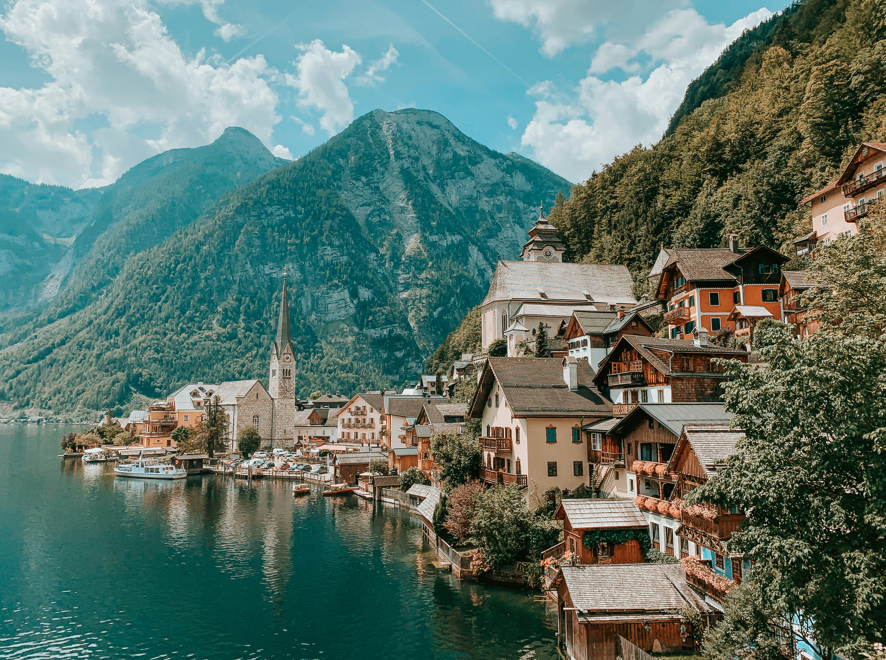
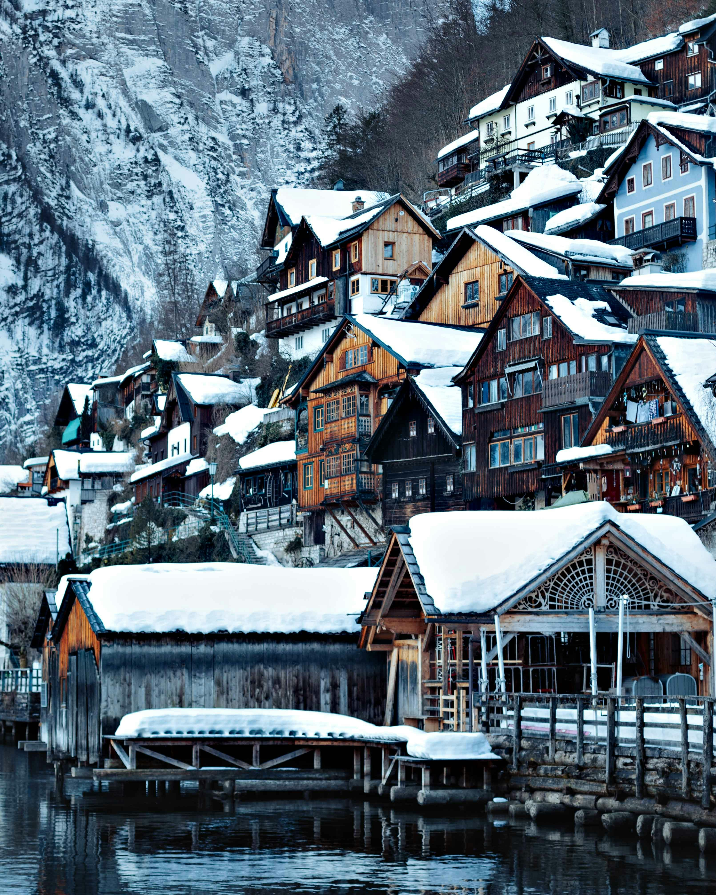
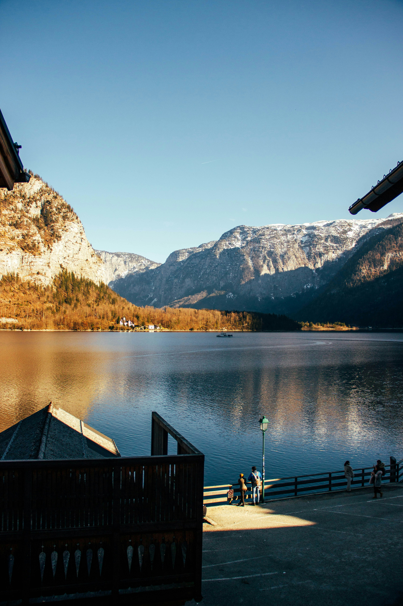
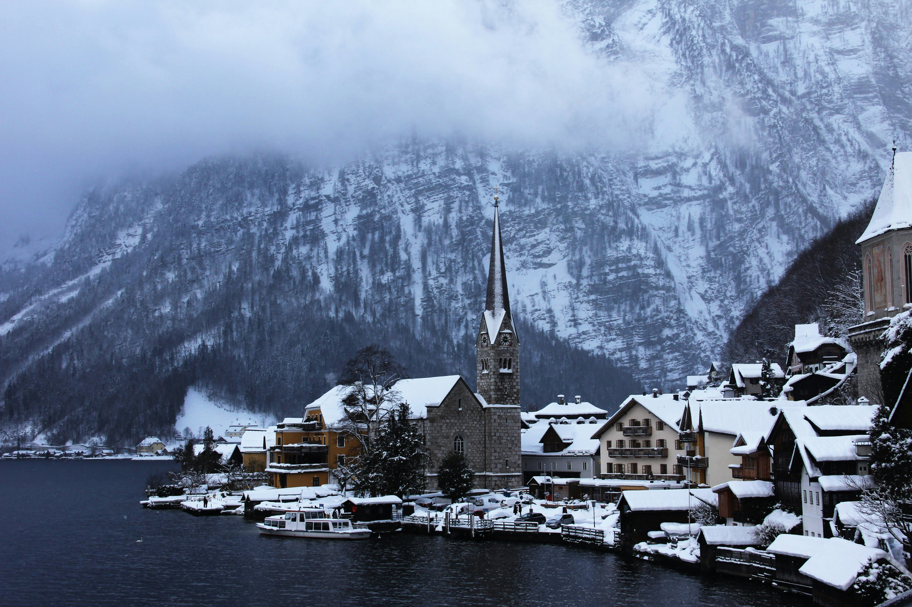
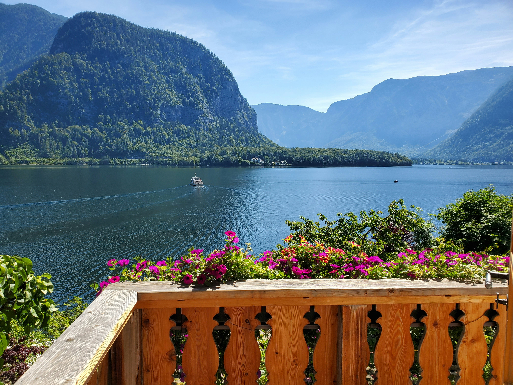
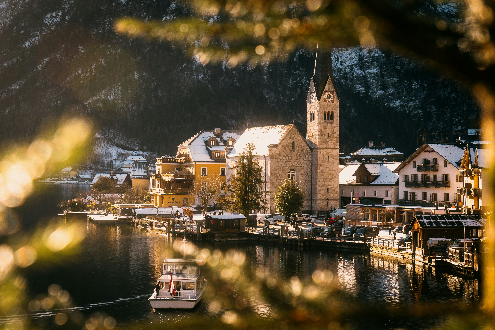

Contemplação
O amanhecer oferece o silêncio necessário para absorver a energia das montanhas.
Seis perspectivas únicas da vida alpina capturadas em detalhes.






Seestraße 99, 4830 Hallstatt, Áustria
O amanhecer oferece o silêncio necessário para absorver a energia das montanhas.
Aprecie a cultura local com calma; lembre-se que o vilarejo é uma área residencial viva.
Utilize o ferry que atravessa o lago. A vista da vila chegando pela água é inesquecível.
Mesmo no verão, as noites alpinas podem ser frias. Tenha sempre um casaco impermeável.
Os melhores ângulos estão nas ruelas superiores, longe do fluxo principal de turistas.
Por ser um destino concorrido, reserve hotéis e restaurantes com meses de antecedência.